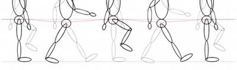
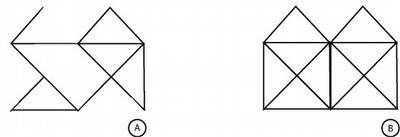

Beispiel
Das Gesetz lässt sich auf zwei Wegen nutzen. Einerseits können dadurch komplexe Designs reduziert werden. Beispielweise können wir in einer Animation nur einzelnen Zwischenbilder angeben. Unser Gehirn ergänzt die fehlenden Zwischenbilder automatisch. Beispielsweise erkennen wir, dass die untere Figur sich nach vorne bewegt, obwohl nur wenige Zwischenschritte abgebildet sind.
Gesetz beachtet
Schließlich werden nach dem Gesetz der Geschlossenheit Linien, die eine Fläche umschließen, unter sonst gleichen Umständen leichter als eine Einheit (Gestalt) aufgefasst als diejenigen, die sich nicht zusammenschließen. Im Beispiel sehen wir jene eckigen Klammern als zusammengehörig an, die Rechtecke bilden, weil diese eher eine Fläche umfassen als jene benachbarten eckigen Klammern, die auseinanderstreben.

Gesetz missachtet
Die Figur auf der linken Seite weißt einige Lücken auf und wir können sie Aufgrund der Komplexität nicht mehr identifizieren, obwohl uns die Figur bekannt ist. Das Gesetz gilt also nur für einfach Formen und Muster.